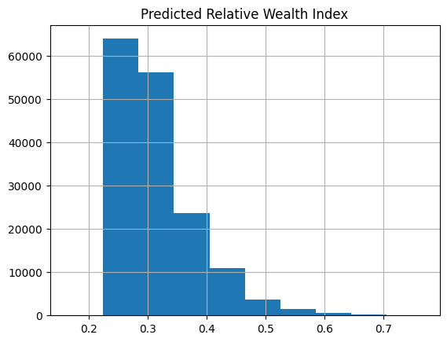
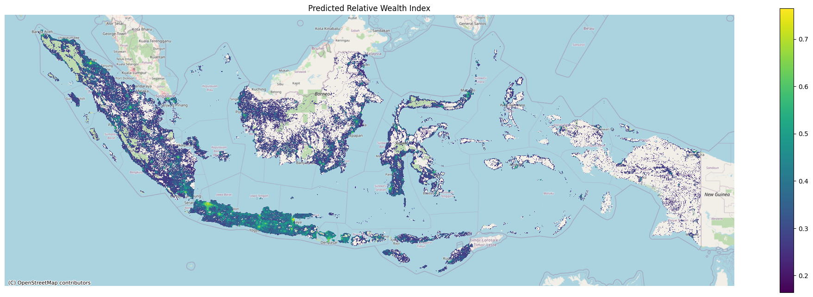
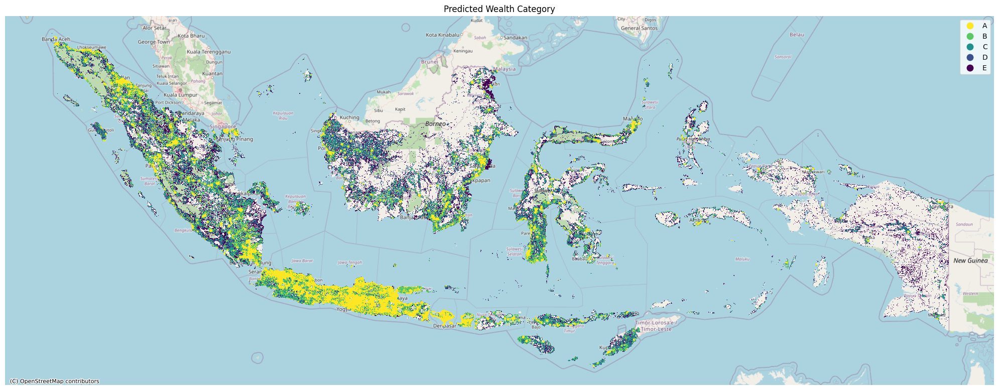

%matplotlib inline
%reload_ext autoreload
%autoreload 2Predict on rollout grids
import os
import sys
sys.path.append("../../../")
import gc
import getpass
import pickle
from pathlib import Path
import contextily as cx
import geopandas as gpd
import matplotlib.pyplot as plt
import numpy as np
import pandas as pd
from loguru import logger
from sklearn.preprocessing import MinMaxScaler, StandardScaler
from povertymapping import nightlights, settings
from povertymapping.dhs import generate_dhs_cluster_level_data
from povertymapping.feature_engineering import (
categorize_wealth_index,
generate_features,
)
from povertymapping.iso3 import get_region_name
from povertymapping.ookla import OoklaDataManager
from povertymapping.osm import get_osm_extent
from povertymapping.rollout_grids import get_region_filtered_bingtile_grids/home/jc_tm/project_repos/unicef-ai4d-poverty-mapping/env/lib/python3.9/site-packages/tqdm/auto.py:22: TqdmWarning: IProgress not found. Please update jupyter and ipywidgets. See https://ipywidgets.readthedocs.io/en/stable/user_install.html
from .autonotebook import tqdm as notebook_tqdmModel Prediction on Rollout Grids: Indonesia
This notebook is the final step in the rollout and runs the final model to create relative wealth estimations over populated areas within the given country. The model predictions will have a spatial resolution of 2.4km.
The predicted relative wealth value gives us the relative wealth level of an area compared to the rest of the country, which fixes the value range from 0 (lowest wealth) to 1 (highest wealth). In between these extremes, each area’s wealth estimate is scaled to a value between 0 and 1.
The predicted relative wealth value is later binned into 5 wealth categories A-E by dividing the distribution into quintiles (every 20th percentile).
Set up Data Access
The following cell will prompt you to enter your EOG username and password. See this page to learn how to set-up your EOG account.
# Log-in using EOG credentials
username = os.environ.get("EOG_USER", None)
username = username if username is not None else input("Username?")
password = os.environ.get("EOG_PASSWORD", None)
password = password if password is not None else getpass.getpass("Password?")
# set save_token to True so that access token gets stored in ~/.eog_creds/eog_access_token
access_token = nightlights.get_eog_access_token(username, password, save_token=True)Set country-specific parameters
For Indonesia, we need to process the OSM data per subregion, listed in country_subareas_osm
COUNTRY_CODE = "id"
COUNTRY_SUBAREAS_OSM = [
"maluku",
"sulawesi",
"sumatra",
"java",
"kalimantan",
"nusa-tenggara",
"papua",
]
OOKLA_YEAR = 2019
NIGHTLIGHTS_YEAR = 2019
rollout_date = "-".join(os.getcwd().split("/")[-2].split("-")[:3])
rollout_grids_path = Path(f"./{rollout_date}-{COUNTRY_CODE}-rollout-grids.geojson")
rollout_grids_pathPath('2023-02-21-id-rollout-grids.geojson')Set Model Parameters
# Model to use for prediction
MODEL_SAVE_PATH = Path(f"../{rollout_date}-cross-country-model.pkl")Load Country Rollout AOI
The rollout area of interest is split into 2.4km grid tiles (zoom level 14), matching the areas used during model training. The grids are also filtered to only include populated areas based on Meta’s High Resolution Settlement Layer (HRSL) data.
Refer to the previous notebook 2_id_generate_grids.ipynb for documentation on generating this grid.
aoi = gpd.read_file(rollout_grids_path)
aoi.info()<class 'geopandas.geodataframe.GeoDataFrame'>
RangeIndex: 161230 entries, 0 to 161229
Data columns (total 9 columns):
# Column Non-Null Count Dtype
--- ------ -------------- -----
0 quadkey 161230 non-null object
1 shapeName 161230 non-null object
2 shapeISO 161230 non-null object
3 shapeID 161230 non-null object
4 shapeGroup 161230 non-null object
5 shapeType 161230 non-null object
6 quadkey_level8 161230 non-null object
7 pop_count 161230 non-null float64
8 geometry 161230 non-null geometry
dtypes: float64(1), geometry(1), object(7)
memory usage: 11.1+ MBGenerate Features For Rollout AOI
If this is your first time running this notebook for this specific area, expect a long runtime for the following cell as it will download and cache the required datasets. It will then process the relevant features for each area specified. On subsequent runs, the runtime will be much faster as the data is already stored in your filesystem.
Retrieve base data
Unlike the rollouts for the other countries, we need to generate the features in batches for Indonesia. We will first get the data per subarea, combine them, then scale them afterwards to get the final features set.
%%time
subarea_data_list = []
for subarea_osm in COUNTRY_SUBAREAS_OSM:
subarea_extent = get_osm_extent(subarea_osm)
aoi_in_subarea = (
gpd.sjoin(aoi, subarea_extent, how="inner", predicate="intersects")
.drop(columns=["index_right"])
.reset_index(drop=True)
)
logger.info(
f"Processing aoi grids in osm_region: {subarea_osm} (n = {len(aoi_in_subarea)})"
)
aoi_in_subarea = generate_features(
aoi_in_subarea,
subarea_osm,
ookla_year=OOKLA_YEAR,
nightlights_year=NIGHTLIGHTS_YEAR,
scale=False,
features_only=False,
use_aoi_quadkey=True,
aoi_quadkey_col="quadkey",
)
subarea_data_list.append(aoi_in_subarea)
# Combine all country data into a single dataframe
aoi_data = gpd.GeoDataFrame(
pd.concat(subarea_data_list, ignore_index=True), crs=subarea_data_list[0].crs
)
# There may be duplicates for rows that are in between two subareas.
# For now we will just keep the first occurence
aoi_data = aoi_data.drop_duplicates("quadkey")2023-03-27 13:59:24.581 | INFO | __main__:<module>:10 - Processing aoi grids in osm_region: maluku (n = 5382)
2023-03-27 13:59:24.604 | INFO | povertymapping.osm:download_osm_country_data:199 - OSM Data: Cached data available for maluku at /home/jc_tm/.geowrangler/osm/maluku? True
2023-03-27 13:59:24.605 | DEBUG | povertymapping.osm:load_pois:161 - OSM POIs for maluku being loaded from /home/jc_tm/.geowrangler/osm/maluku/gis_osm_pois_free_1.shp
2023-03-27 13:59:26.544 | INFO | povertymapping.osm:download_osm_country_data:199 - OSM Data: Cached data available for maluku at /home/jc_tm/.geowrangler/osm/maluku? True
2023-03-27 13:59:26.545 | DEBUG | povertymapping.osm:load_roads:180 - OSM Roads for maluku being loaded from /home/jc_tm/.geowrangler/osm/maluku/gis_osm_roads_free_1.shp
2023-03-27 13:59:28.400 | DEBUG | povertymapping.ookla:load_type_year_data:79 - Contents of data cache: []
2023-03-27 13:59:28.401 | INFO | povertymapping.ookla:load_type_year_data:94 - Cached data available at /home/jc_tm/.geowrangler/ookla/processed/f27d4125b0af2f25de5887b97337dda8.csv? True
2023-03-27 13:59:28.401 | DEBUG | povertymapping.ookla:load_type_year_data:99 - Processed Ookla data for aoi, fixed 2019 (key: f27d4125b0af2f25de5887b97337dda8) found in filesystem. Loading in cache.
2023-03-27 13:59:28.615 | DEBUG | povertymapping.ookla:load_type_year_data:79 - Contents of data cache: ['f27d4125b0af2f25de5887b97337dda8']
2023-03-27 13:59:28.616 | INFO | povertymapping.ookla:load_type_year_data:94 - Cached data available at /home/jc_tm/.geowrangler/ookla/processed/4c62be18f1160e4a59f99103821087e0.csv? True
2023-03-27 13:59:28.617 | DEBUG | povertymapping.ookla:load_type_year_data:99 - Processed Ookla data for aoi, mobile 2019 (key: 4c62be18f1160e4a59f99103821087e0) found in filesystem. Loading in cache.
2023-03-27 13:59:28.942 | INFO | povertymapping.nightlights:get_clipped_raster:414 - Retrieving clipped raster file /home/jc_tm/.geowrangler/nightlights/clip/ed850f7ba44fd077cd10cd6e138b61e6.tif
2023-03-27 13:59:44.766 | INFO | __main__:<module>:10 - Processing aoi grids in osm_region: sulawesi (n = 19539)
2023-03-27 13:59:44.784 | INFO | povertymapping.osm:download_osm_country_data:199 - OSM Data: Cached data available for sulawesi at /home/jc_tm/.geowrangler/osm/sulawesi? True
2023-03-27 13:59:44.785 | DEBUG | povertymapping.osm:load_pois:161 - OSM POIs for sulawesi being loaded from /home/jc_tm/.geowrangler/osm/sulawesi/gis_osm_pois_free_1.shp
2023-03-27 13:59:49.619 | INFO | povertymapping.osm:download_osm_country_data:199 - OSM Data: Cached data available for sulawesi at /home/jc_tm/.geowrangler/osm/sulawesi? True
2023-03-27 13:59:49.620 | DEBUG | povertymapping.osm:load_roads:180 - OSM Roads for sulawesi being loaded from /home/jc_tm/.geowrangler/osm/sulawesi/gis_osm_roads_free_1.shp
2023-03-27 14:00:03.940 | DEBUG | povertymapping.ookla:load_type_year_data:79 - Contents of data cache: []
2023-03-27 14:00:03.941 | INFO | povertymapping.ookla:load_type_year_data:94 - Cached data available at /home/jc_tm/.geowrangler/ookla/processed/5622e1dd0f31372638f661bbaea40135.csv? True
2023-03-27 14:00:03.941 | DEBUG | povertymapping.ookla:load_type_year_data:99 - Processed Ookla data for aoi, fixed 2019 (key: 5622e1dd0f31372638f661bbaea40135) found in filesystem. Loading in cache.
2023-03-27 14:00:04.724 | DEBUG | povertymapping.ookla:load_type_year_data:79 - Contents of data cache: ['5622e1dd0f31372638f661bbaea40135']
2023-03-27 14:00:04.725 | INFO | povertymapping.ookla:load_type_year_data:94 - Cached data available at /home/jc_tm/.geowrangler/ookla/processed/d84ecb4698fdd8b7451981e2186f43fd.csv? True
2023-03-27 14:00:04.726 | DEBUG | povertymapping.ookla:load_type_year_data:99 - Processed Ookla data for aoi, mobile 2019 (key: d84ecb4698fdd8b7451981e2186f43fd) found in filesystem. Loading in cache.
2023-03-27 14:00:06.252 | INFO | povertymapping.nightlights:get_clipped_raster:414 - Retrieving clipped raster file /home/jc_tm/.geowrangler/nightlights/clip/6011900184199ef125c4b43eb293c9ce.tif
2023-03-27 14:00:58.617 | INFO | __main__:<module>:10 - Processing aoi grids in osm_region: sumatra (n = 53233)
2023-03-27 14:00:58.648 | INFO | povertymapping.osm:download_osm_country_data:199 - OSM Data: Cached data available for sumatra at /home/jc_tm/.geowrangler/osm/sumatra? True
2023-03-27 14:00:58.650 | DEBUG | povertymapping.osm:load_pois:161 - OSM POIs for sumatra being loaded from /home/jc_tm/.geowrangler/osm/sumatra/gis_osm_pois_free_1.shp
2023-03-27 14:01:14.211 | INFO | povertymapping.osm:download_osm_country_data:199 - OSM Data: Cached data available for sumatra at /home/jc_tm/.geowrangler/osm/sumatra? True
2023-03-27 14:01:14.212 | DEBUG | povertymapping.osm:load_roads:180 - OSM Roads for sumatra being loaded from /home/jc_tm/.geowrangler/osm/sumatra/gis_osm_roads_free_1.shp
2023-03-27 14:02:32.869 | DEBUG | povertymapping.ookla:load_type_year_data:79 - Contents of data cache: []
2023-03-27 14:02:32.870 | INFO | povertymapping.ookla:load_type_year_data:94 - Cached data available at /home/jc_tm/.geowrangler/ookla/processed/aa6272cfeac1d385e496cbf9801c587b.csv? True
2023-03-27 14:02:32.871 | DEBUG | povertymapping.ookla:load_type_year_data:99 - Processed Ookla data for aoi, fixed 2019 (key: aa6272cfeac1d385e496cbf9801c587b) found in filesystem. Loading in cache.
2023-03-27 14:02:36.728 | DEBUG | povertymapping.ookla:load_type_year_data:79 - Contents of data cache: ['aa6272cfeac1d385e496cbf9801c587b']
2023-03-27 14:02:36.730 | INFO | povertymapping.ookla:load_type_year_data:94 - Cached data available at /home/jc_tm/.geowrangler/ookla/processed/6b857fb260ce23ac9d2ccce000c97236.csv? True
2023-03-27 14:02:36.731 | DEBUG | povertymapping.ookla:load_type_year_data:99 - Processed Ookla data for aoi, mobile 2019 (key: 6b857fb260ce23ac9d2ccce000c97236) found in filesystem. Loading in cache.
2023-03-27 14:02:42.486 | INFO | povertymapping.nightlights:get_clipped_raster:414 - Retrieving clipped raster file /home/jc_tm/.geowrangler/nightlights/clip/462205ec17044884a7f2947f4a9c234d.tif
2023-03-27 14:05:50.721 | INFO | __main__:<module>:10 - Processing aoi grids in osm_region: java (n = 22410)
2023-03-27 14:05:50.729 | INFO | povertymapping.osm:download_osm_country_data:199 - OSM Data: Cached data available for java at /home/jc_tm/.geowrangler/osm/java? True
2023-03-27 14:05:50.730 | DEBUG | povertymapping.osm:load_pois:161 - OSM POIs for java being loaded from /home/jc_tm/.geowrangler/osm/java/gis_osm_pois_free_1.shp
2023-03-27 14:05:59.508 | INFO | povertymapping.osm:download_osm_country_data:199 - OSM Data: Cached data available for java at /home/jc_tm/.geowrangler/osm/java? True
2023-03-27 14:05:59.509 | DEBUG | povertymapping.osm:load_roads:180 - OSM Roads for java being loaded from /home/jc_tm/.geowrangler/osm/java/gis_osm_roads_free_1.shp
2023-03-27 14:09:44.680 | DEBUG | povertymapping.ookla:load_type_year_data:79 - Contents of data cache: []
2023-03-27 14:09:44.745 | INFO | povertymapping.ookla:load_type_year_data:94 - Cached data available at /home/jc_tm/.geowrangler/ookla/processed/ea8a6bb7251081d7365303983f947520.csv? True
2023-03-27 14:09:44.746 | DEBUG | povertymapping.ookla:load_type_year_data:99 - Processed Ookla data for aoi, fixed 2019 (key: ea8a6bb7251081d7365303983f947520) found in filesystem. Loading in cache.
2023-03-27 14:09:55.710 | DEBUG | povertymapping.ookla:load_type_year_data:79 - Contents of data cache: ['ea8a6bb7251081d7365303983f947520']
2023-03-27 14:09:55.713 | INFO | povertymapping.ookla:load_type_year_data:94 - Cached data available at /home/jc_tm/.geowrangler/ookla/processed/f3c66a0775e1c5a4af8c43ac6dca90b5.csv? True
2023-03-27 14:09:55.716 | DEBUG | povertymapping.ookla:load_type_year_data:99 - Processed Ookla data for aoi, mobile 2019 (key: f3c66a0775e1c5a4af8c43ac6dca90b5) found in filesystem. Loading in cache.
2023-03-27 14:10:06.291 | INFO | povertymapping.nightlights:get_clipped_raster:414 - Retrieving clipped raster file /home/jc_tm/.geowrangler/nightlights/clip/3bccf87f95c849414e612bb8612a3133.tif
2023-03-27 14:11:40.387 | INFO | __main__:<module>:10 - Processing aoi grids in osm_region: kalimantan (n = 38920)
2023-03-27 14:11:40.404 | INFO | povertymapping.osm:download_osm_country_data:199 - OSM Data: Cached data available for kalimantan at /home/jc_tm/.geowrangler/osm/kalimantan? True
2023-03-27 14:11:40.404 | DEBUG | povertymapping.osm:load_pois:161 - OSM POIs for kalimantan being loaded from /home/jc_tm/.geowrangler/osm/kalimantan/gis_osm_pois_free_1.shp
2023-03-27 14:11:52.585 | INFO | povertymapping.osm:download_osm_country_data:199 - OSM Data: Cached data available for kalimantan at /home/jc_tm/.geowrangler/osm/kalimantan? True
2023-03-27 14:11:52.587 | DEBUG | povertymapping.osm:load_roads:180 - OSM Roads for kalimantan being loaded from /home/jc_tm/.geowrangler/osm/kalimantan/gis_osm_roads_free_1.shp
2023-03-27 14:12:23.971 | DEBUG | povertymapping.ookla:load_type_year_data:79 - Contents of data cache: []
2023-03-27 14:12:23.972 | INFO | povertymapping.ookla:load_type_year_data:94 - Cached data available at /home/jc_tm/.geowrangler/ookla/processed/29811a88971fa6c1a87fe17b2cffa8e9.csv? True
2023-03-27 14:12:23.974 | DEBUG | povertymapping.ookla:load_type_year_data:99 - Processed Ookla data for aoi, fixed 2019 (key: 29811a88971fa6c1a87fe17b2cffa8e9) found in filesystem. Loading in cache.
2023-03-27 14:12:25.523 | DEBUG | povertymapping.ookla:load_type_year_data:79 - Contents of data cache: ['29811a88971fa6c1a87fe17b2cffa8e9']
2023-03-27 14:12:25.526 | INFO | povertymapping.ookla:load_type_year_data:94 - Cached data available at /home/jc_tm/.geowrangler/ookla/processed/e9271eff2c0ac6181bd4de2879629cd9.csv? True
2023-03-27 14:12:25.528 | DEBUG | povertymapping.ookla:load_type_year_data:99 - Processed Ookla data for aoi, mobile 2019 (key: e9271eff2c0ac6181bd4de2879629cd9) found in filesystem. Loading in cache.
2023-03-27 14:12:28.114 | INFO | povertymapping.nightlights:get_clipped_raster:414 - Retrieving clipped raster file /home/jc_tm/.geowrangler/nightlights/clip/25512b5099d25dbebc72b632ac347d15.tif
2023-03-27 14:14:39.138 | INFO | __main__:<module>:10 - Processing aoi grids in osm_region: nusa-tenggara (n = 10460)
2023-03-27 14:14:39.144 | INFO | povertymapping.osm:download_osm_country_data:199 - OSM Data: Cached data available for nusa-tenggara at /home/jc_tm/.geowrangler/osm/nusa-tenggara? True
2023-03-27 14:14:39.146 | DEBUG | povertymapping.osm:load_pois:161 - OSM POIs for nusa-tenggara being loaded from /home/jc_tm/.geowrangler/osm/nusa-tenggara/gis_osm_pois_free_1.shp
2023-03-27 14:14:46.071 | INFO | povertymapping.osm:download_osm_country_data:199 - OSM Data: Cached data available for nusa-tenggara at /home/jc_tm/.geowrangler/osm/nusa-tenggara? True
2023-03-27 14:14:46.072 | DEBUG | povertymapping.osm:load_roads:180 - OSM Roads for nusa-tenggara being loaded from /home/jc_tm/.geowrangler/osm/nusa-tenggara/gis_osm_roads_free_1.shp
2023-03-27 14:15:03.166 | DEBUG | povertymapping.ookla:load_type_year_data:79 - Contents of data cache: []
2023-03-27 14:15:03.167 | INFO | povertymapping.ookla:load_type_year_data:94 - Cached data available at /home/jc_tm/.geowrangler/ookla/processed/c3496f562826bb68fc2387652c1abcd4.csv? True
2023-03-27 14:15:03.168 | DEBUG | povertymapping.ookla:load_type_year_data:99 - Processed Ookla data for aoi, fixed 2019 (key: c3496f562826bb68fc2387652c1abcd4) found in filesystem. Loading in cache.
2023-03-27 14:15:03.842 | DEBUG | povertymapping.ookla:load_type_year_data:79 - Contents of data cache: ['c3496f562826bb68fc2387652c1abcd4']
2023-03-27 14:15:03.843 | INFO | povertymapping.ookla:load_type_year_data:94 - Cached data available at /home/jc_tm/.geowrangler/ookla/processed/e5ce887b5648fec776e45071c5c9de7d.csv? True
2023-03-27 14:15:03.843 | DEBUG | povertymapping.ookla:load_type_year_data:99 - Processed Ookla data for aoi, mobile 2019 (key: e5ce887b5648fec776e45071c5c9de7d) found in filesystem. Loading in cache.
2023-03-27 14:15:04.930 | INFO | povertymapping.nightlights:get_clipped_raster:414 - Retrieving clipped raster file /home/jc_tm/.geowrangler/nightlights/clip/d96c1f5ca075585b2b98d3a6133208f6.tif
2023-03-27 14:15:38.716 | INFO | __main__:<module>:10 - Processing aoi grids in osm_region: papua (n = 11295)
2023-03-27 14:15:38.723 | INFO | povertymapping.osm:download_osm_country_data:199 - OSM Data: Cached data available for papua at /home/jc_tm/.geowrangler/osm/papua? True
2023-03-27 14:15:38.724 | DEBUG | povertymapping.osm:load_pois:161 - OSM POIs for papua being loaded from /home/jc_tm/.geowrangler/osm/papua/gis_osm_pois_free_1.shp
2023-03-27 14:15:42.485 | INFO | povertymapping.osm:download_osm_country_data:199 - OSM Data: Cached data available for papua at /home/jc_tm/.geowrangler/osm/papua? True
2023-03-27 14:15:42.486 | DEBUG | povertymapping.osm:load_roads:180 - OSM Roads for papua being loaded from /home/jc_tm/.geowrangler/osm/papua/gis_osm_roads_free_1.shp
2023-03-27 14:15:45.547 | DEBUG | povertymapping.ookla:load_type_year_data:79 - Contents of data cache: []
2023-03-27 14:15:45.549 | INFO | povertymapping.ookla:load_type_year_data:94 - Cached data available at /home/jc_tm/.geowrangler/ookla/processed/c324fe4c202355c02f43820ab90e7e8e.csv? True
2023-03-27 14:15:45.550 | DEBUG | povertymapping.ookla:load_type_year_data:99 - Processed Ookla data for aoi, fixed 2019 (key: c324fe4c202355c02f43820ab90e7e8e) found in filesystem. Loading in cache.
2023-03-27 14:15:45.845 | DEBUG | povertymapping.ookla:load_type_year_data:79 - Contents of data cache: ['c324fe4c202355c02f43820ab90e7e8e']
2023-03-27 14:15:45.846 | INFO | povertymapping.ookla:load_type_year_data:94 - Cached data available at /home/jc_tm/.geowrangler/ookla/processed/92b3ee712b9e11813b76cad2700fd9fe.csv? True
2023-03-27 14:15:45.847 | DEBUG | povertymapping.ookla:load_type_year_data:99 - Processed Ookla data for aoi, mobile 2019 (key: 92b3ee712b9e11813b76cad2700fd9fe) found in filesystem. Loading in cache.
2023-03-27 14:15:46.223 | INFO | povertymapping.nightlights:get_clipped_raster:414 - Retrieving clipped raster file /home/jc_tm/.geowrangler/nightlights/clip/37b7ad633aa40929271999e019b70b8c.tifCPU times: user 14min 56s, sys: 1min 51s, total: 16min 48s
Wall time: 17min 15saoi_data.info()<class 'geopandas.geodataframe.GeoDataFrame'>
Int64Index: 161230 entries, 0 to 161238
Data columns (total 71 columns):
# Column Non-Null Count Dtype
--- ------ -------------- -----
0 quadkey 161230 non-null object
1 shapeName 161230 non-null object
2 shapeISO 161230 non-null object
3 shapeID 161230 non-null object
4 shapeGroup 161230 non-null object
5 shapeType 161230 non-null object
6 quadkey_level8 161230 non-null object
7 pop_count 161230 non-null float64
8 geometry 161230 non-null geometry
9 osm_region 161230 non-null object
10 poi_count 161230 non-null float64
11 atm_count 161230 non-null float64
12 atm_nearest 161230 non-null float64
13 bank_count 161230 non-null float64
14 bank_nearest 161230 non-null float64
15 bus_station_count 161230 non-null float64
16 bus_station_nearest 161230 non-null float64
17 cafe_count 161230 non-null float64
18 cafe_nearest 161230 non-null float64
19 charging_station_count 161230 non-null float64
20 charging_station_nearest 161230 non-null float64
21 courthouse_count 161230 non-null float64
22 courthouse_nearest 161230 non-null float64
23 dentist_count 161230 non-null float64
24 dentist_nearest 161230 non-null float64
25 fast_food_count 161230 non-null float64
26 fast_food_nearest 161230 non-null float64
27 fire_station_count 161230 non-null float64
28 fire_station_nearest 161230 non-null float64
29 food_court_count 161230 non-null float64
30 food_court_nearest 161230 non-null float64
31 fuel_count 161230 non-null float64
32 fuel_nearest 161230 non-null float64
33 hospital_count 161230 non-null float64
34 hospital_nearest 161230 non-null float64
35 library_count 161230 non-null float64
36 library_nearest 161230 non-null float64
37 marketplace_count 161230 non-null float64
38 marketplace_nearest 161230 non-null float64
39 pharmacy_count 161230 non-null float64
40 pharmacy_nearest 161230 non-null float64
41 police_count 161230 non-null float64
42 police_nearest 161230 non-null float64
43 post_box_count 161230 non-null float64
44 post_box_nearest 161230 non-null float64
45 post_office_count 161230 non-null float64
46 post_office_nearest 161230 non-null float64
47 restaurant_count 161230 non-null float64
48 restaurant_nearest 161230 non-null float64
49 social_facility_count 161230 non-null float64
50 social_facility_nearest 161230 non-null float64
51 supermarket_count 161230 non-null float64
52 supermarket_nearest 161230 non-null float64
53 townhall_count 161230 non-null float64
54 townhall_nearest 161230 non-null float64
55 road_count 161230 non-null float64
56 fixed_2019_mean_avg_d_kbps_mean 161230 non-null float64
57 fixed_2019_mean_avg_u_kbps_mean 161230 non-null float64
58 fixed_2019_mean_avg_lat_ms_mean 161230 non-null float64
59 fixed_2019_mean_num_tests_mean 161230 non-null float64
60 fixed_2019_mean_num_devices_mean 161230 non-null float64
61 mobile_2019_mean_avg_d_kbps_mean 161230 non-null float64
62 mobile_2019_mean_avg_u_kbps_mean 161230 non-null float64
63 mobile_2019_mean_avg_lat_ms_mean 161230 non-null float64
64 mobile_2019_mean_num_tests_mean 161230 non-null float64
65 mobile_2019_mean_num_devices_mean 161230 non-null float64
66 avg_rad_min 161230 non-null float64
67 avg_rad_max 161230 non-null float64
68 avg_rad_mean 161230 non-null float64
69 avg_rad_std 161230 non-null float64
70 avg_rad_median 161230 non-null float64
dtypes: float64(62), geometry(1), object(8)
memory usage: 88.6+ MBScale and clean features
# Get list of raw features generated
feature_cols = [
x for x in aoi_data.columns if x not in list(aoi.columns) + ["osm_region"]
]%%time
scaler = MinMaxScaler()
rollout_aoi = aoi_data[
[col for col in aoi_data.columns if col not in feature_cols]
].copy()
features = aoi_data[feature_cols].copy()
for col in feature_cols:
max_val = features[[col]].max()
features[col + "_scaled"] = scaler.fit_transform(
features[[col]].clip(upper=max_val, axis=1)
)CPU times: user 3.4 s, sys: 0 ns, total: 3.4 s
Wall time: 3.4 s# Save raw features, can be used for validation
raw_features = features[[col for col in features.columns if "_scaled" not in col]]
# Then keep only scaled columns
features = features[[col for col in features.columns if "_scaled" in col]]Inspect the generated features
features.info()<class 'pandas.core.frame.DataFrame'>
Int64Index: 161230 entries, 0 to 161238
Data columns (total 61 columns):
# Column Non-Null Count Dtype
--- ------ -------------- -----
0 poi_count_scaled 161230 non-null float64
1 atm_count_scaled 161230 non-null float64
2 atm_nearest_scaled 161230 non-null float64
3 bank_count_scaled 161230 non-null float64
4 bank_nearest_scaled 161230 non-null float64
5 bus_station_count_scaled 161230 non-null float64
6 bus_station_nearest_scaled 161230 non-null float64
7 cafe_count_scaled 161230 non-null float64
8 cafe_nearest_scaled 161230 non-null float64
9 charging_station_count_scaled 161230 non-null float64
10 charging_station_nearest_scaled 161230 non-null float64
11 courthouse_count_scaled 161230 non-null float64
12 courthouse_nearest_scaled 161230 non-null float64
13 dentist_count_scaled 161230 non-null float64
14 dentist_nearest_scaled 161230 non-null float64
15 fast_food_count_scaled 161230 non-null float64
16 fast_food_nearest_scaled 161230 non-null float64
17 fire_station_count_scaled 161230 non-null float64
18 fire_station_nearest_scaled 161230 non-null float64
19 food_court_count_scaled 161230 non-null float64
20 food_court_nearest_scaled 161230 non-null float64
21 fuel_count_scaled 161230 non-null float64
22 fuel_nearest_scaled 161230 non-null float64
23 hospital_count_scaled 161230 non-null float64
24 hospital_nearest_scaled 161230 non-null float64
25 library_count_scaled 161230 non-null float64
26 library_nearest_scaled 161230 non-null float64
27 marketplace_count_scaled 161230 non-null float64
28 marketplace_nearest_scaled 161230 non-null float64
29 pharmacy_count_scaled 161230 non-null float64
30 pharmacy_nearest_scaled 161230 non-null float64
31 police_count_scaled 161230 non-null float64
32 police_nearest_scaled 161230 non-null float64
33 post_box_count_scaled 161230 non-null float64
34 post_box_nearest_scaled 161230 non-null float64
35 post_office_count_scaled 161230 non-null float64
36 post_office_nearest_scaled 161230 non-null float64
37 restaurant_count_scaled 161230 non-null float64
38 restaurant_nearest_scaled 161230 non-null float64
39 social_facility_count_scaled 161230 non-null float64
40 social_facility_nearest_scaled 161230 non-null float64
41 supermarket_count_scaled 161230 non-null float64
42 supermarket_nearest_scaled 161230 non-null float64
43 townhall_count_scaled 161230 non-null float64
44 townhall_nearest_scaled 161230 non-null float64
45 road_count_scaled 161230 non-null float64
46 fixed_2019_mean_avg_d_kbps_mean_scaled 161230 non-null float64
47 fixed_2019_mean_avg_u_kbps_mean_scaled 161230 non-null float64
48 fixed_2019_mean_avg_lat_ms_mean_scaled 161230 non-null float64
49 fixed_2019_mean_num_tests_mean_scaled 161230 non-null float64
50 fixed_2019_mean_num_devices_mean_scaled 161230 non-null float64
51 mobile_2019_mean_avg_d_kbps_mean_scaled 161230 non-null float64
52 mobile_2019_mean_avg_u_kbps_mean_scaled 161230 non-null float64
53 mobile_2019_mean_avg_lat_ms_mean_scaled 161230 non-null float64
54 mobile_2019_mean_num_tests_mean_scaled 161230 non-null float64
55 mobile_2019_mean_num_devices_mean_scaled 161230 non-null float64
56 avg_rad_min_scaled 161230 non-null float64
57 avg_rad_max_scaled 161230 non-null float64
58 avg_rad_mean_scaled 161230 non-null float64
59 avg_rad_std_scaled 161230 non-null float64
60 avg_rad_median_scaled 161230 non-null float64
dtypes: float64(61)
memory usage: 76.3 MBRun Model on AOI
Load Model
with open(MODEL_SAVE_PATH, "rb") as f:
model = pickle.load(f)Make Predictions
rollout_aoi["Predicted Relative Wealth Index"] = model.predict(features.values)Binning predictions into wealth categories
Afterwards, we label the predicted relative wealth by binning them into 5 categories: A, B, C, D, and E where A is the highest and E is the lowest.
We can create these wealth categories by splitting the output Predicted Relative Wealth Index distribution into 5 equally sized quintiles, i.e. every 20th percentile.
This categorization may be modified to suit the context of the target country.
rollout_aoi["Predicted Wealth Category (quintile)"] = categorize_wealth_index(
rollout_aoi["Predicted Relative Wealth Index"]
).astype(str)rollout_aoi.info()rollout_aoi.head(2)Save output
%%time
rollout_aoi.to_file(
f"{rollout_date}-{COUNTRY_CODE}-rollout-output.geojson",
driver="GeoJSON",
index=False,
)CPU times: user 39.8 s, sys: 851 ms, total: 40.7 s
Wall time: 40.7 s# Join back raw features and save
rollout_output_with_features = rollout_aoi.join(raw_features).join(features)
rollout_output_with_features.to_file(
f"{rollout_date}-{COUNTRY_CODE}-rollout-output-with-features.geojson",
driver="GeoJSON",
index=False,
)Visualizations
Inspect predicted wealth index and output dataframe
rollout_aoi[["Predicted Relative Wealth Index"]].hist()array([[<AxesSubplot: title={'center': 'Predicted Relative Wealth Index'}>]],
dtype=object)
Create Static Maps
Plot Predicted Relative Wealth Index
plt.cla()
plt.clf()
rollout_aoi_plot = rollout_aoi.to_crs("EPSG:3857")
ax = rollout_aoi_plot.plot(
"Predicted Relative Wealth Index",
figsize=(20, 8),
cmap="viridis",
legend=True,
legend_kwds={"shrink": 0.8},
)
cx.add_basemap(ax, source=cx.providers.OpenStreetMap.Mapnik)
ax.set_axis_off()
plt.title("Predicted Relative Wealth Index")
plt.tight_layout()
plt.savefig(f"{rollout_date}-{COUNTRY_CODE}-predicted-wealth-index.png")
plt.show()<Figure size 640x480 with 0 Axes>
Plot Predicted Relative Wealth Index Category
plt.cla()
plt.clf()
rollout_aoi_plot = rollout_aoi.to_crs("EPSG:3857")
ax = rollout_aoi_plot.plot(
"Predicted Wealth Category (quintile)",
figsize=(20, 8),
cmap="viridis_r",
legend=True,
)
cx.add_basemap(ax, source=cx.providers.OpenStreetMap.Mapnik)
ax.set_axis_off()
plt.title("Predicted Wealth Category")
plt.tight_layout()
plt.savefig(f"{rollout_date}-{COUNTRY_CODE}-predicted-wealth-bin.png")
plt.show()<Figure size 640x480 with 0 Axes>
Create an Interactive Map
cols_of_interest = [
"quadkey",
"shapeName",
"shapeGroup",
"pop_count",
"avg_rad_mean",
"mobile_2019_mean_avg_d_kbps_mean",
"fixed_2019_mean_avg_d_kbps_mean",
"poi_count",
"road_count",
"Predicted Relative Wealth Index",
"Predicted Wealth Category (quintile)",
]
# Warning: This can be a bit laggy due to the large amount of tiles being visualized
# Uncomment the ff if you want to viz the raw wealth predictions
# rollout_aoi.explore(column='Predicted Relative Wealth Index', tooltip=cols_of_interest, cmap="viridis")
# Uncomment the ff if you want to view the quintiles
# rollout_aoi.explore(column='Predicted Wealth Category (quintile)', tooltip=cols_of_interest, cmap="viridis_r")Alternatively, you may also try to visualize this interactively in Kepler by uploading the rollout output geojson file.